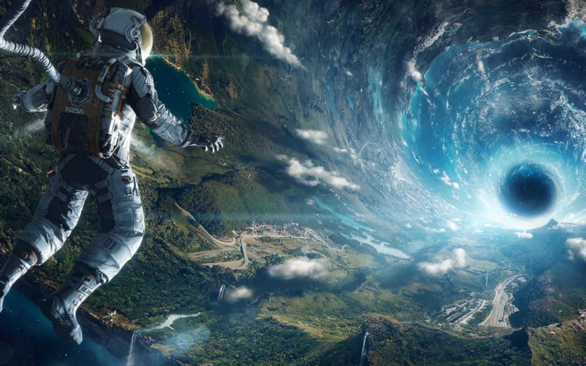

O universo, vasto e imensurável, é o cenário onde toda a existência se desenrola. Uma tapeçaria cósmica de bilhões de galáxias, cada uma contendo bilhões de estrelas, planetas e outros corpos celestes, estende-se para além dos limites de nossa compreensão. Em sua vastidão, o universo abriga uma diversidade insondável, desde os brilhantes redemoinhos de gás e poeira até os negros buracos que desafiam as leis da física. O tempo e o espaço são entrelaçados em uma dança cósmica, onde estrelas nascem, vivem e morrem, enquanto galáxias colidem e se fundem em um espetáculo de grandeza incomparável. Fenômenos cósmicos, como supernovas, pulsares e quasares, pontuam o universo com explosões de energia que desafiam nossa imaginação. Enquanto exploramos os mistérios do cosmos, somos confrontados com perguntas que desafiam nossa compreensão mais profunda. O que existe além dos limites do universo observável? Existem outras formas de vida lá fora, navegando pelo vasto oceano do espaço? O universo, em sua infinitude, nos desafia a explorar, descobrir e compreender nossas origens e nosso lugar no cosmos.
No vasto palco do universo, inúmeras curiosidades cósmicas aguardam para nos surpreender e desafiar nossa compreensão. Magnetars, estrelas de nêutrons com campos magnéticos bilhões de vezes mais fortes do que os de um ímã típico, distorcem átomos a milhares de quilômetros de distância. Enquanto isso, supernovas, explosões estelares brilhantes o suficiente para ofuscar uma galáxia inteira, iluminam o cosmos com sua energia titânica. Galáxias canibais mergulham no processo de fusão, onde galáxias maiores consomem suas contrapartes menores, resultando na formação de novas e peculiares formações galácticas. Enquanto isso, a teoria dos buracos de minhoca nos transporta para além das fronteiras conhecidas, sugerindo túneis no tecido do espaço-tempo que podem conectar diferentes partes do universo ou até mesmo universos paralelos. Ondas gravitacionais, perturbações no espaço-tempo provocadas por eventos cósmicos extremos, corroboram as teorias de Einstein e nos oferecem uma nova janela para o universo invisível. Enquanto isso, a Via Láctea, nossa galáxia lar, está destinada a colidir com Andrômeda em um futuro distante, formando uma nova e massiva galáxia chamada "Milkomeda". No mundo subatômico, neutrinos, partículas fantasma com massa minúscula e sem carga elétrica, atravessam nosso corpo em números inimagináveis, interagindo raramente com a matéria comum. Essas curiosidades, apenas um vislumbre do espetáculo cósmico, nos lembram da vastidão e complexidade do universo, convidando-nos a explorar suas maravilhas e desvendar seus mistérios cada vez mais profundos.